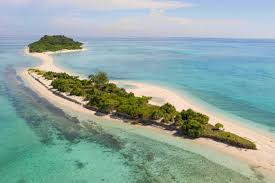
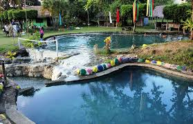
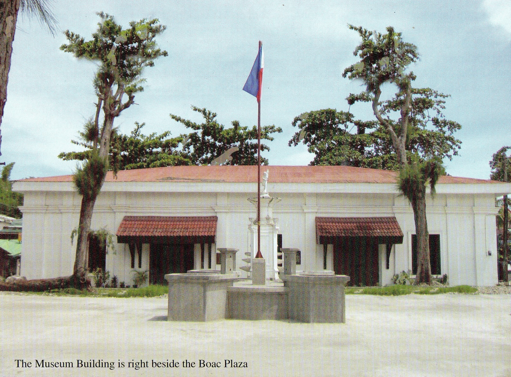

Known Attractions
Beaches, caves, mountains, heritage sites, and one-of-a-kind experiences that make Marinduque worth the journey.
The Island's Highlights
Despite its modest size, Marinduque punches well above its weight in terms of attractions. Its six municipalities collectively offer pristine beaches, spectacular geological formations, centuries-old heritage, and living cultural traditions that few Philippine islands can rival.
Beaches & Islands

Maniwaya Beach
📍 Santa Cruz
Widely considered Marinduque's most beautiful beach — a wide arc of white sand and turquoise waters accessible only by boat, preserving its pristine, unhurried character.

Tres Reyes Islands
📍 Gasan
Three uninhabited islands — Melchor, Gaspar, and Baltazar — named after the Three Kings. Renowned for vibrant coral reefs and exceptional snorkeling and diving visibility.

Poctoy White Beach
📍 Torrijos
A long, accessible family-friendly beach celebrated for its fine sand, calm waters, and spectacular sunsets over the Sibuyan Sea — the island's most visited coastal stretch.
Nature & Adventure

Mount Malindig
📍 Torrijos
Marinduque's highest peak at 1,157 meters, an active stratovolcano with diverse ecosystems from coconut groves to cloud forest. Hikers are rewarded with a 360-degree view of the entire island.

Bathala Caves
📍 Buenavista
A seven-chambered limestone cave system named after the ancient Tagalog supreme deity. Cathedral-like stalactite formations, underground pools, and evidence of prehistoric habitation make this a must-visit.

Malbog Sulfur Spring
📍 Boac
Natural hot sulfur springs surrounded by tropical forest, believed to have therapeutic properties. The sight of steam rising from mineral-rich pools amid green vegetation is striking and serene.
Heritage & History

Boac Cathedral
📍 Boac
A 17th-century fortress-church built to defend against pirate raids. Its thick stone walls and elevated position above the Boac River make it one of the most distinctive and historically significant churches in the Philippines.

Luzon Datum Point
📍 Boac
The geodetic origin of all Philippine maps since 1911 — a bronze marker atop a hill that represents Marinduque's extraordinary scientific significance. A pilgrimage point for geographers, historians, and curious travelers.

Marinduque National Museum
📍 Boac
Houses an extensive collection of Morion masks, pre-colonial artifacts, maritime trade relics, and historical photographs. The ideal first stop to understand the island's history before exploring further.
Browse All Destinations
See the full list of 12 tourist destinations with entrance fees, opening hours, activities, and travel tips — all filterable by category.
View All Destinations